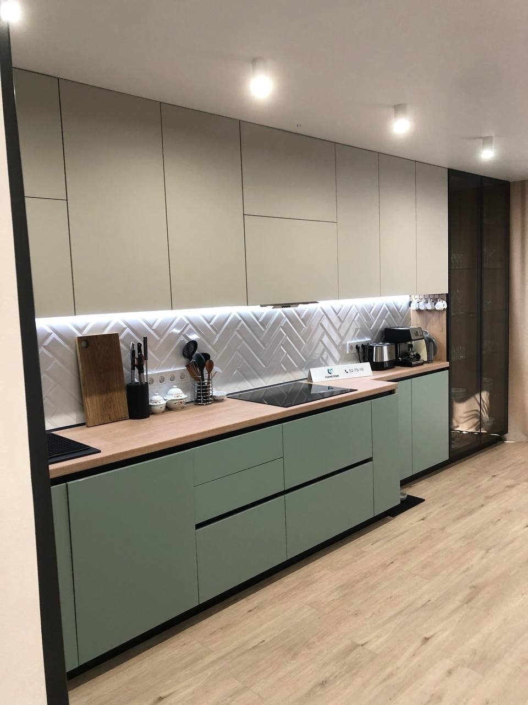

Геометрия · ЛипецкКухня по вашим размерам.
Кухня по вашим размерам.
В Липецке и области.
Кухни и корпусная мебель на заказ от производителя. Подготовим проект под планировку вашего помещения.
Рассчитать кухню
ПРИМЕРЫ РЕШЕНИЙФасады.
Фасады.
Планировка. Наполнение.
Важны рабочая поверхность и то, что скрыто за фасадами. Рассмотрите кухню и детали хранения, а размеры, технику и наполнение обсудим в вашем проекте.
Обсудить мою кухню